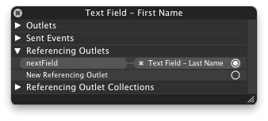

How to navigate through textfields (Next / Done Buttons)
How can I navigate through all my text fields with the "Next" Button on the iPhone Keyboard?
The last text field should close the Keyboard.
I've setup the IB the Buttons (Next / Done) but now I'm stuck.
I implemented the textFieldShouldReturn action but now the Next and Done Buttons close the Keyboard.
Answer
In Cocoa for Mac OS X, you have the next responder chain, where you can ask the text field what control should have focus next. This is what makes tabbing between text fields work. But since iOS devices do not have a keyboard, only touch, this concept has not survived the transition to Cocoa Touch.
This can be easily done anyway, with two assumptions:
- All "tabbable"
UITextFields are on the same parent view. - Their "tab-order" is defined by the tag property.
Assuming this you can override textFieldShouldReturn: as this:
-(BOOL)textFieldShouldReturn:(UITextField*)textField { NSInteger nextTag = textField.tag + 1; // Try to find next responder UIResponder* nextResponder = [textField.superview viewWithTag:nextTag]; if (nextResponder) { // Found next responder, so set it. [nextResponder becomeFirstResponder]; } else { // Not found, so remove keyboard. [textField resignFirstResponder]; } return NO; // We do not want UITextField to insert line-breaks. }
Add some more code, and the assumptions can be ignored as well.
Swift 4.0
func textFieldShouldReturn(_ textField: UITextField) -> Bool { let nextTag = textField.tag + 1 // Try to find next responder let nextResponder = textField.superview?.viewWithTag(nextTag) as UIResponder! if nextResponder != nil { // Found next responder, so set it nextResponder?.becomeFirstResponder() } else { // Not found, so remove keyboard textField.resignFirstResponder() } return false }
If the superview of the text field will be a UITableViewCell then next responder will be
let nextResponder = textField.superview?.superview?.superview?.viewWithTag(nextTag) as UIResponder!
Suggest
There is a much more elegant solution which blew me away the first time I saw it. Benefits:
- Closer to OSX textfield implementation where a textfield knows where the focus should go next
- Does not rely on setting or using tags -- which are, IMO fragile for this use case
- Can be extended to work with both
UITextFieldandUITextViewcontrols -- or any keyboard entry UI control - Doesn't clutter your view controller with boilerplate UITextField delegate code
- Integrates nicely with IB and can be configured through the familiar option-drag-drop to connect outlets.
Create a UITextField subclass which has an IBOutlet property called
nextField. Here's the header:
@interface SOTextField : UITextField @property (weak, nonatomic) IBOutlet UITextField *nextField; @end
And here's the implementation:
@implementation SOTextField @end
In your view controller, you'll create the -textFieldShouldReturn: delegate
method:
- (BOOL)textFieldShouldReturn:(UITextField *)textField { if ([textField isKindOfClass:[SOTextField class]]) { UITextField *nextField = [(SOTextField *)textField nextField]; if (nextField) { dispatch_async(dispatch_get_current_queue(), ^{ [nextField becomeFirstResponder]; }); } else { [textField resignFirstResponder]; } } return YES; }
In IB, change your UITextFields to use the SOTextField class. Next, also in
IB, set the delegate for each of the 'SOTextFields'to 'File's Owner' (which is
right where you put the code for the delegate method - textFieldShouldReturn).
The beauty of this design is that now you can simply right-click on any
textField and assign the nextField outlet to the next SOTextField object you
want to be the next responder.

Moreover, you can do cool things like loop the textFields so that after the last one loses focus, the first one will receive focus again.
This can easily be extended to automatically assign the returnKeyType of the
SOTextField to a UIReturnKeyNext if there is a nextField assigned -- one
less thing manually configure.